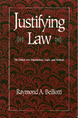

<body bgcolor="#FFFFFF" text="#000000" link="#0000FF" vlink="#CC0000" alink="#CC0000"><center><hr width="350" size="1" align="center" noshade>A critical survey of a number of philosophical approaches to law and judicial decision-making<hr width="350" size="1" align="center" noshade><p><a href="https://cdcshoppingcart.uchicago.edu/Cart/ChicagoBook.aspx?ISBN=9780877228189&&PRESS=temple" target="_top">Buy this book!</a> | <a href="https://cdcshoppingcart.uchicago.edu/Cart/Cart.aspx?PRESS=temple" target="_top">View Cart</a> | <a href="https://cdcshoppingcart.uchicago.edu/Cart/Cart.aspx?PRESS=temple" target="_top">Check Out</a></p><p></p></center><!--none//--><h1>Justifying Law</h1>
<H2>The Debate over Foundations, Goals, and Methods</H2>
<h3>Raymond A. Belliotti</h3>
<P>cloth 0-87722-818-3 $64.95, Dec 91, <FONT COLOR=#990033>Out of Print</FONT>
<br>paper 1-56639-203-9 $42.95, Jan 94, <FONT COLOR=#990033>Available</FONT>
<BR> 312 pp
6x9
</P><BLOCKQUOTE><I>"A comprehensive assessment of traditional and contemporary legal thought, Mr. Belliotti's defense of 'critical pragmatism' is a significant contribution to the literature. This book takes on all the leading theories and takes them on seriously. It is one of the most ambitious and satisfying efforts in print at mediating the seemingly irreconcilable tensions between law's mainstream liberal analysts and its leftist critics."</I>
<br>&#151<b>Anita L. Allen</b>, Professor of Law, Georgetown University Law Center<I></I></BLOCKQUOTE>
<p>Entering the perennial debate about the role and definition of law, Raymond Belliotti presents a critical survey of a number of philosophical approaches to law and judicial decision-making. Confronting the conflicting orientations represented by legal formalism and legal realism, he discusses the relationship between law and society. For a decision such as <I>Roe v. Wade</I>, the differing justifications by formalists and realists can affect policy interpretations as well as legal challenges. The application of an implicit right to privacy versus the attempt to enact policy that deals with a social problem and the acceptance of judicial innovation demonstrates how sometimes opposing arguments can reach the same legal decision. While providing his own account of law, Belliotti takes seriously the legal critiques inspired by Marxism and feminism and illustrates how traditional philosophical problems and methods plague legal theory. He also shows the impasses to which our argumentation strategies lead and suggests ways we might transcend those dead ends.
<BR>&nbsp;<h2>Reviews</h2>
<p><I>"The author brings a critical intelligence and a very impressive scholarship to traditional issues in law. The strength that jumps from the page is a very well informed contemporary reading that avoids clichés and the limits of much contemporary analysis."</I>
<br>&#151<b>John Brigham</b>, University of Massachusetts, Amherst, and author of <I><a href="506_reg.html" target="_top">The Cult of the Court</a></I> (Temple)
<p><I>"[A]n excellent survey and analysis of major theories in the philosophy of law. The book features intelligent discussions of such diverse approaches as natural law theory, legal positivism, law and economics, feminist jurisprudence, and Critical Legal Studies. </I>Justifying Law<I> is full of insight, clear reasoning, and common sense.... The wide-ranging examination reveals Belliotti's substantial scholarship and keen intelligence.... Through his presentation and commentary on several philosophies of law and individual legal theorists, Belliotti has enriched and advanced jurisprudential dialogue and inquiry."</I>
<br>&#151<b><I>Journal of Value Inquiry</I></b>
<BR>&nbsp;<h2>Contents</h2><P>
<p>Acknowledgments
<br>Introduction: The Terms of the Debate: Legal Formalism and Legal Realism
<p><b>Part I: The Core of Law: Analytic Jurisprudence</b>
<br>1. The Immanent Moral Order and Law's Objectivity: Natural Law
<br>2. The Quest for Rigor: Legal Positivism
<br>3. The Right Answer Thesis: Ronald Dworkin's Legal Idealism
<br>4. Quantitative Analysis and Circular Apologetics: Law and Economics
<br>5. Reconceiving Rational Constraints: The Interpretivist Turn
<p><b>Part II: What's Left of Law? Challenging Law's Pretensions</b>
<br>6. Historical Necessity and Radical Contingency: Marxist Jurisprudence
<br>7. The Fundamental Contradiction and Nihilism: Critical Legal Studies
<br>8. In Search of Dialogue: Feminism Unmodified
<p><b>Part III: Law's Aspirations and Philosophical Method: Promises, Impasses, and New Directions</b>
<br>9. A Dialogue Between Mainstream Methods and the New Guard: Is There Any Hope?
<br>10. Critical Pragmatism: Pluralism, Justification, and Law's Directive Power
<p>Notes
<br>Index
</P><BR>&nbsp;<H2>About the Author(s)</H2>
<table><tr><td valign="top"><img src="/tempress/authors/876_au.gif" height="90" width="75"></td><td width="100%" valign="middle"><p><b>Raymond A. Belliotti</b> is Professor of Philosophy at State University of New York at Fredonia.</P></td></tr></table>
<BR><H2>Subject Categories</H2>
<p><A HREF="/tempress/philosophy.html" TARGET="_top">Philosophy and Ethics</a>
</p>
<p align="center"><a href="https://cdcshoppingcart.uchicago.edu/Cart/ChicagoBook.aspx?ISBN=9780877228189&&PRESS=temple" target="_top">Buy this book!</a> | <a href="https://cdcshoppingcart.uchicago.edu/Cart/Cart.aspx?PRESS=temple" target="_top">View Cart</a> | <a href="https://cdcshoppingcart.uchicago.edu/Cart/Cart.aspx?PRESS=temple" target="_top">Check Out</a></p><p><font face="Arial" size="1"><a href="copyright.html" onMouseOver="window.status='Web Copyright Policy';return true;" onMouseOut="window.status=''" title="Web Copyright Policy">&copy;</a> 2015 <a href="http://www.temple.edu" target="new" onMouseOver="window.status='Link to Temple University home page';return true;" onMouseOut="window.status=''" title="Link to Temple University home page">Temple University</a>. All Rights Reserved. http://www.temple.edu/tempress/titles/876_reg.html</font></p>